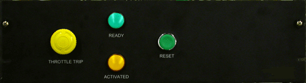

How To – Activate and Reset the Override System
This How To provides the steps and information required to activate and reset the Override system.
This How To contains the following topics:
To Activate the Override System (if required)
- Press the Throttle Trip pushbutton mounted on the manual override panel in a client selected location(s).
The throttle actuator returns to the pre-set Throttle stop position (typically idle) and remains there until the override system is re-set.
- Shut off the engine when it is convenient according to facility procedures.
For further details, see GA-900-01-13995 Outline and Installation, Panel Assembly, UECU-500 Mark II, Manual Override.

To Reset the Override System
- Ensure that the engine is shut off.
- Investigate the reason it was necessary to use the override system trip and rectify any problems.
Ensure that the Throttle System is in Run Mode.
- Reset the Throttle Trip pushbutton (quarter turn, clockwise) on the manual override panel.
- Depress and hold the RESET button.
After approximately 10 seconds the READY indicator shows green. This indicates enough time has passed to reset the air motor mechanism.
The UECU-500 Mark III Throttle performs a re-engagement sequence and re-enters Run Mode so that the operator regains normal control.
The re-engagement sequence takes approximately two minutes as the actuator motor is slowly rotated until the clutch re-engages.
- With the engine shut down, verify that the actuator functions correctly by operating the Throttle System throughout it's operating range and verify correct operation of the engine fuel control lever.